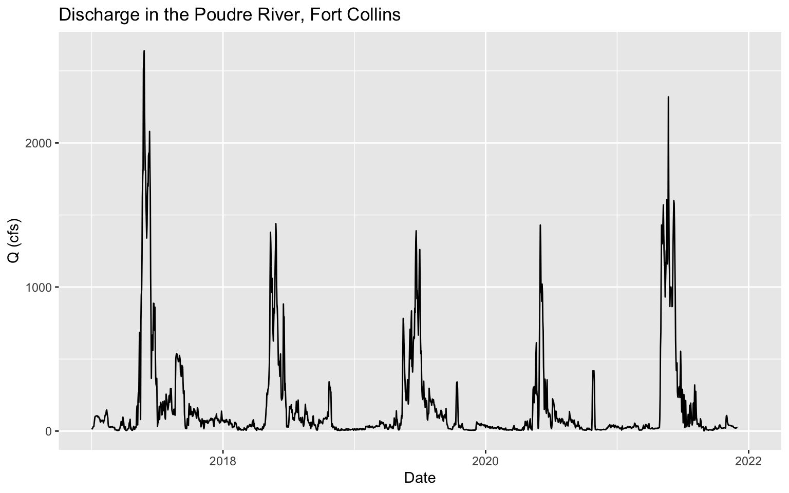
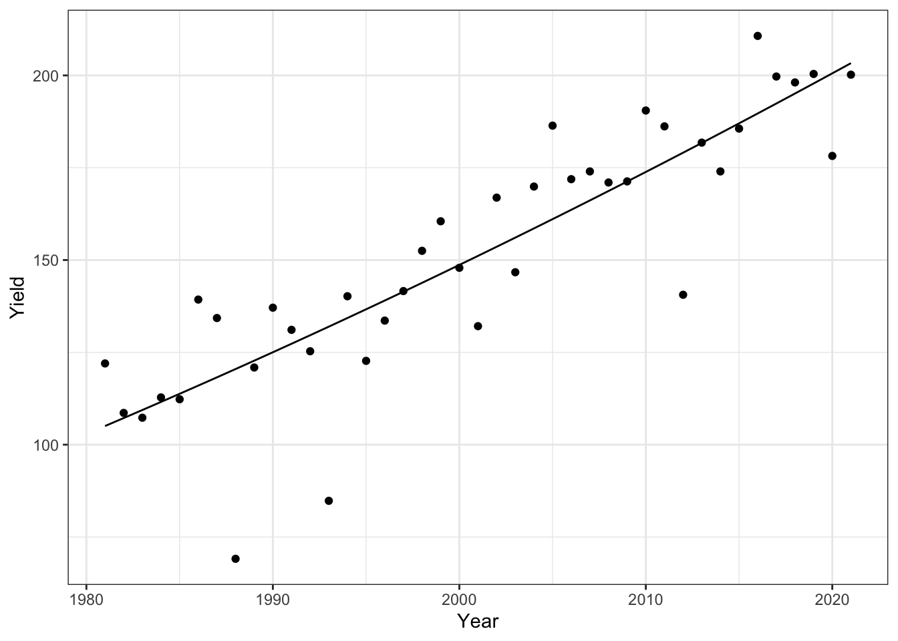
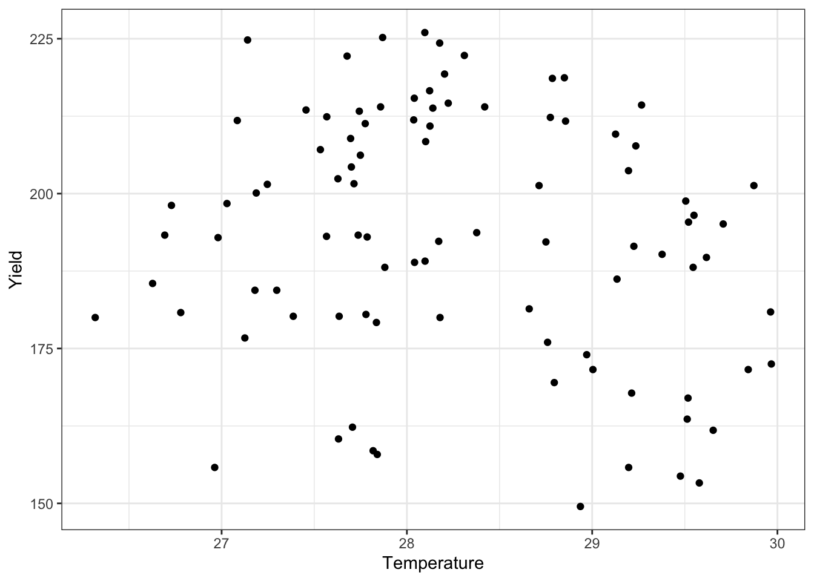
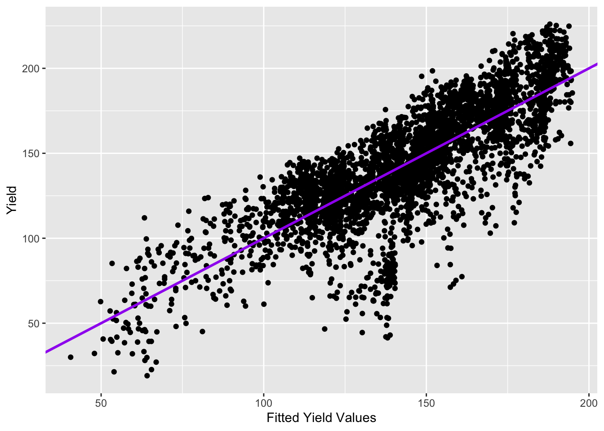

Chapter 7 Assignment 5: Weather Corn Regression
7.1 Weather Data Analysis
7.1.1 Load the PRISM daily maximum temperatures
# daily max temperature
# dimensions: counties x days x years
prism <- readMat("data_corn/prismiowa.mat")
# look at county #1
t_1981_c1 <- prism$tmaxdaily.iowa[1,,1]
t_1981_c1[366]## [1] NaNplot(1:366, t_1981_c1, type = "l")
ggplot() +
geom_line(mapping = aes(x=1:366, y = t_1981_c1)) +
theme_bw() +
xlab("day of year") +
ylab("daily maximum temperature (°C)") +
ggtitle("Daily Maximum Temperature, Iowa County #1")## Warning: Removed 1 row(s) containing missing values (geom_path).
# assign dimension names to tmax matrix
dimnames(prism$tmaxdaily.iowa) <- list(prism$COUNTYFP, 1:366, prism$years)
# converted 3d matrix into a data frame
tmaxdf <- as.data.frame.table(prism$tmaxdaily.iowa)
# relabel the columns
colnames(tmaxdf) <- c("countyfp","doy","year","tmax")
tmaxdf <- tibble(tmaxdf)7.2 Temperature trends
7.2.1 Summer temperature trends: Winneshiek County
tmaxdf$doy <- as.numeric(tmaxdf$doy)
tmaxdf$year <- as.numeric(as.character(tmaxdf$year))
winnesummer <- tmaxdf %>%
filter(countyfp==191 & doy >= 152 & doy <= 243) %>%
group_by(year) %>%
summarize(meantmax = mean(tmax))
ggplot(winnesummer, mapping = aes(x = year, y = meantmax)) +
geom_point() +
theme_bw() +
labs(x = "year", y = "Tmax (°C)") +
geom_smooth(method = lm)
lm_summertmax <- lm(meantmax ~ year, winnesummer)
summary(lm_summertmax)##
## Call:
## lm(formula = meantmax ~ year, data = winnesummer)
##
## Residuals:
## Min 1Q Median 3Q Max
## -2.5189 -0.7867 -0.0341 0.6859 3.7415
##
## Coefficients:
## Estimate Std. Error t value Pr(>|t|)
## (Intercept) 41.57670 36.44848 1.141 0.262
## year -0.00747 0.01823 -0.410 0.684
##
## Residual standard error: 1.232 on 36 degrees of freedom
## Multiple R-squared: 0.004644, Adjusted R-squared: -0.02301
## F-statistic: 0.168 on 1 and 36 DF, p-value: 0.68447.2.2 Winter Temperatures - Winneshiek County
winnewinter <- tmaxdf %>%
filter(countyfp==191 & (doy <= 59 | doy >= 335) & !is.na(tmax)) %>%
group_by(year) %>%
summarize(meantmax = mean(tmax))
ggplot(winnewinter, mapping = aes(x = year, y = meantmax)) +
geom_point() +
theme_bw() +
labs(x = "year", y = "Tmax (°C)") +
geom_smooth(method = lm)
lm_wintertmax <- lm(meantmax ~ year, winnewinter)
summary(lm_wintertmax)##
## Call:
## lm(formula = meantmax ~ year, data = winnewinter)
##
## Residuals:
## Min 1Q Median 3Q Max
## -3.5978 -1.4917 -0.3053 1.3778 4.5709
##
## Coefficients:
## Estimate Std. Error t value Pr(>|t|)
## (Intercept) -29.87825 60.48100 -0.494 0.624
## year 0.01368 0.03025 0.452 0.654
##
## Residual standard error: 2.045 on 36 degrees of freedom
## Multiple R-squared: 0.005652, Adjusted R-squared: -0.02197
## F-statistic: 0.2046 on 1 and 36 DF, p-value: 0.65377.2.3 Multiple regression – Quadratic time trend
winnewinter$yearsq <- winnewinter$year^2
lm_wintertmaxquad <- lm(meantmax ~ year + yearsq, winnewinter)
summary(lm_wintertmaxquad)##
## Call:
## lm(formula = meantmax ~ year + yearsq, data = winnewinter)
##
## Residuals:
## Min 1Q Median 3Q Max
## -3.3539 -1.2985 -0.2813 1.4055 4.2620
##
## Coefficients:
## Estimate Std. Error t value Pr(>|t|)
## (Intercept) -1.086e+04 1.238e+04 -0.877 0.386
## year 1.085e+01 1.239e+01 0.876 0.387
## yearsq -2.710e-03 3.097e-03 -0.875 0.388
##
## Residual standard error: 2.051 on 35 degrees of freedom
## Multiple R-squared: 0.02694, Adjusted R-squared: -0.02867
## F-statistic: 0.4845 on 2 and 35 DF, p-value: 0.6201winnewinter$fitted <- lm_wintertmaxquad$fitted.values
ggplot(winnewinter) +
geom_point(mapping = aes(x = year, y = meantmax)) +
geom_line(mapping = aes(x = year, y = fitted)) +
theme_bw() +
labs(x = "year", y = "tmax")
7.2.4 Download NASS corn yield data
# set our API key with NASS
nassqs_auth(key = "DD0322AC-2B3C-34A0-B93C-52D5A8844518")
# parameters to query on
params <- list(commodity_desc = "CORN", util_practice_desc = "GRAIN", prodn_practice_desc = "ALL PRODUCTION PRACTICES", year__GE = 1981, state_alpha = "IA")
# download
cornyieldsall <- nassqs_yields(params)
cornyieldsall$county_ansi <- as.numeric(cornyieldsall$county_ansi)
cornyieldsall$yield <- as.numeric(cornyieldsall$Value)
# clean and filter this dataset
cornyields <- select(cornyieldsall, county_ansi, county_name, yield, year) %>%
filter(!is.na(county_ansi) & !is.na(yield))
cornyields <- tibble(cornyields)7.3 Assignment
7.3.1 Question 1a: Extract Winneshiek County corn yields, fit a linear time trend, make a plot. Is there a significant time trend?
# county data
cornWinneshiek<-cornyields%>%
filter(county_name == "WINNESHIEK")
# linear model
lm_Winneshiek <- lm(yield ~ year, cornWinneshiek)
summary(lm_Winneshiek)##
## Call:
## lm(formula = yield ~ year, data = cornWinneshiek)
##
## Residuals:
## Min 1Q Median 3Q Max
## -51.163 -1.841 2.363 9.437 24.376
##
## Coefficients:
## Estimate Std. Error t value Pr(>|t|)
## (Intercept) -4763.290 448.286 -10.63 4.46e-13 ***
## year 2.457 0.224 10.96 1.77e-13 ***
## ---
## Signif. codes: 0 '***' 0.001 '**' 0.01 '*' 0.05 '.' 0.1 ' ' 1
##
## Residual standard error: 16.97 on 39 degrees of freedom
## Multiple R-squared: 0.7551, Adjusted R-squared: 0.7488
## F-statistic: 120.2 on 1 and 39 DF, p-value: 1.767e-13# plot
ggplot(cornWinneshiek, mapping = aes(x = year, y = yield)) +
geom_point() +
geom_smooth(method = lm) +
labs(x = "Year", y = "Yield")
- There is a significant increase in yield over time.
7.3.2 Question 1b: Fit a quadratic time trend (i.e., year + year^2) and make a plot. Is there evidence for slowing yield growth?
#year^2
cornWinneshiek$yearsq <- cornWinneshiek$year^2
# linear model
lm_Winneshiek <- lm(yield ~ year + yearsq, cornWinneshiek)
summary(lm_Winneshiek)##
## Call:
## lm(formula = yield ~ year + yearsq, data = cornWinneshiek)
##
## Residuals:
## Min 1Q Median 3Q Max
## -51.384 -3.115 1.388 9.743 25.324
##
## Coefficients:
## Estimate Std. Error t value Pr(>|t|)
## (Intercept) 2.583e+04 8.580e+04 0.301 0.765
## year -2.812e+01 8.576e+01 -0.328 0.745
## yearsq 7.641e-03 2.143e-02 0.357 0.723
##
## Residual standard error: 17.17 on 38 degrees of freedom
## Multiple R-squared: 0.7559, Adjusted R-squared: 0.7431
## F-statistic: 58.84 on 2 and 38 DF, p-value: 2.311e-12cornWinneshiek$fitted <- lm_Winneshiek$fitted.values
# plot
ggplot(cornWinneshiek) +
geom_point(mapping = aes(x = year, y = yield)) +
geom_line(mapping = aes(x = year, y = fitted)) +
theme_bw() +
labs(x = "Year", y = "Yield")- The quadratic time trend does not show evidence of slowing yield growth.
7.3.3 Question 2 – Time Series: Let’s analyze the relationship between temperature and yields for the Winneshiek County time series. Use data on yield and summer avg Tmax. Is adding year or Tmax^2 to your model helpful? Make a plot and interpret the results.
# join data
WinneshiekJoin<-winnesummer%>%
inner_join(cornWinneshiek, by = "year")
# linear model
WinneshiekJoin$tempsq <-WinneshiekJoin$meantmax^2
lm_Winne <- lm(yield ~ meantmax + tempsq, WinneshiekJoin)
summary(lm_Winne)##
## Call:
## lm(formula = yield ~ meantmax + tempsq, data = WinneshiekJoin)
##
## Residuals:
## Min 1Q Median 3Q Max
## -56.587 -22.262 -0.982 22.409 52.798
##
## Coefficients:
## Estimate Std. Error t value Pr(>|t|)
## (Intercept) -4223.604 1446.639 -2.920 0.00609 **
## meantmax 328.918 107.068 3.072 0.00410 **
## tempsq -6.173 1.979 -3.119 0.00362 **
## ---
## Signif. codes: 0 '***' 0.001 '**' 0.01 '*' 0.05 '.' 0.1 ' ' 1
##
## Residual standard error: 29.5 on 35 degrees of freedom
## Multiple R-squared: 0.2417, Adjusted R-squared: 0.1984
## F-statistic: 5.579 on 2 and 35 DF, p-value: 0.007887# plot
WinneshiekJoin$quadfitted<-lm_Winne$fitted.values
ggplot(WinneshiekJoin) +
geom_point(mapping = aes(x = meantmax, y = yield)) +
geom_line(mapping = aes(x = meantmax, y = quadfitted)) +
theme_bw() +
labs(x = "Temperature", y = "Yield")
- It is not helpful to add Tmax^2 to the model.
7.3.4 Question 3 – Cross-Section: Analyze the relationship between temperature and yield across all counties in 2018. Is there a relationship? Interpret the results.
# get 2018 data
cyield18 <- cornyields %>%
filter(year == 2018) %>%
group_by(county_name) %>%
unique() %>%
filter(!is.na(county_ansi))
temp18 <- tmaxdf%>%
group_by(countyfp)%>%
filter(year == 2018)%>%
filter(!is.na(tmax))%>%
filter(doy >= 152 & doy <= 243) %>%
summarize(meantmax = mean(tmax)) %>%
rename(county_ansi = "countyfp")
temp18$county_ansi <- as.numeric(as.character(temp18$county_ansi))
#Joining the two dfs together
county_yield18 <- left_join(cyield18,temp18, by='county_ansi')
# lm
county_yield18$tempsq <-county_yield18$meantmax^2
lm_county18 <- lm(yield ~ meantmax + tempsq, county_yield18)
summary(lm_county18)##
## Call:
## lm(formula = yield ~ meantmax + tempsq, data = county_yield18)
##
## Residuals:
## Min 1Q Median 3Q Max
## -44.221 -15.399 5.007 14.541 30.879
##
## Coefficients:
## Estimate Std. Error t value Pr(>|t|)
## (Intercept) -5501.602 1860.830 -2.957 0.00397 **
## meantmax 406.789 131.493 3.094 0.00263 **
## tempsq -7.256 2.321 -3.126 0.00239 **
## ---
## Signif. codes: 0 '***' 0.001 '**' 0.01 '*' 0.05 '.' 0.1 ' ' 1
##
## Residual standard error: 18.75 on 90 degrees of freedom
## Multiple R-squared: 0.1317, Adjusted R-squared: 0.1124
## F-statistic: 6.827 on 2 and 90 DF, p-value: 0.001736county_yield18$quadfitted<-lm_county18$fitted.values
#plot
ggplot(county_yield18, aes(x = meantmax, y = yield))+
geom_point()+
theme_bw()+
labs(x = "Temperature", y = "Yield")#plot quadratic
ggplot(county_yield18) +
geom_point(mapping = aes(x = meantmax, y = yield)) +
geom_line(mapping = aes(x = meantmax, y = quadfitted)) +
theme_bw() +
labs(x = "Temperature", y = "Yield")- There is not a trend but the quadratic, however, does show a trend. Looking at the quadratic, there is a decrease in yield for both cooler and hotter temperatures, the peak yield occurs closer to 28°C.
7.3.5 Question 4 – Panel: One way to leverage multiple time series is to group all data into what is called a “panel” regression. Convert the county ID code (“countyfp” or “county_ansi”) into factor using as.factor, then include this variable in a regression using all counties’ yield and summer temperature data. How does the significance of your temperature coefficients (Tmax, Tmax^2) change? Make a plot comparing actual and fitted yields and interpret the results of your model.
# combine data
ttocombine <- tmaxdf%>%
filter(doy >= 152 & doy <= 243) %>%
group_by(countyfp, year)%>%
rename(county_ansi = countyfp)%>%
summarize(meantmax = mean(tmax))
#factor
ttocombine$county_ansi <- as.numeric(as.character(ttocombine$county_ansi))
#Joining the data
yieldtemp <- inner_join(cornyields,ttocombine,)%>%
unique()
#square temp
yieldtemp$meantmaxsq <- yieldtemp$meantmax^2
#lm
lm_yieldtemp<-lm(yield ~county_ansi + meantmax + meantmaxsq + year, yieldtemp)
summary(lm_yieldtemp)##
## Call:
## lm(formula = yield ~ county_ansi + meantmax + meantmaxsq + year,
## data = yieldtemp)
##
## Residuals:
## Min 1Q Median 3Q Max
## -96.676 -9.648 2.439 14.072 48.676
##
## Coefficients:
## Estimate Std. Error t value Pr(>|t|)
## (Intercept) -5.828e+03 1.051e+02 -55.444 <2e-16 ***
## county_ansi -5.633e-03 5.907e-03 -0.954 0.34
## meantmax 1.199e+02 6.527e+00 18.366 <2e-16 ***
## meantmaxsq -2.274e+00 1.162e-01 -19.567 <2e-16 ***
## year 2.202e+00 3.101e-02 71.004 <2e-16 ***
## ---
## Signif. codes: 0 '***' 0.001 '**' 0.01 '*' 0.05 '.' 0.1 ' ' 1
##
## Residual standard error: 20.6 on 3743 degrees of freedom
## Multiple R-squared: 0.6569, Adjusted R-squared: 0.6565
## F-statistic: 1792 on 4 and 3743 DF, p-value: < 2.2e-16#fitted values
yieldtemp$fittedyield<-lm_yieldtemp$fitted.values
#plot
ggplot(yieldtemp, aes(x = fittedyield, y = yield))+
geom_point()+
geom_abline(color = "purple", size = 1)+
labs(x = "Fitted Yield Values", y = "Yield")
- Because the fitted values generally follow the actual yield values and there is a high p-value there is a significant goodness of fit for the model.
7.3.6 Question 5 – Soybeans: Download NASS data on soybean yields and explore either a time series relationship for a given county, the cross-sectional relationship for a given year, or a panel across all counties and years.
# set our API key with NASS
nassqs_auth(key = "DD0322AC-2B3C-34A0-B93C-52D5A8844518")
# parameters to query on
params2 <- list(commodity_desc = "SOYBEANS", statisticcat_desc = "YIELD", prodn_practice_desc = "ALL PRODUCTION PRACTICES", year__GE = 1981, state_alpha = "IA")
# download
soyyieldsall <- nassqs_yields(params)
soyyieldsall$county_ansi <- as.numeric(soyyieldsall$county_ansi)
soyyieldsall$yield <- as.numeric(soyyieldsall$Value)
# clean and filter this dataset
soyyields <- select(soyyieldsall, county_ansi, county_name, yield, year) %>%
filter(!is.na(county_ansi) & !is.na(yield))
soyyields <- tibble(soyyields)
# county data
soyWinneshiek<-soyyields%>%
filter(county_name == "WINNESHIEK")
# linear model
lm_soy <- lm(yield ~ year, soyWinneshiek)
summary(lm_soy)
# plot
ggplot(soyWinneshiek, mapping = aes(x = year, y = yield)) +
geom_point() +
geom_smooth(method = lm) +
labs(x = "Year", y = "Yield")